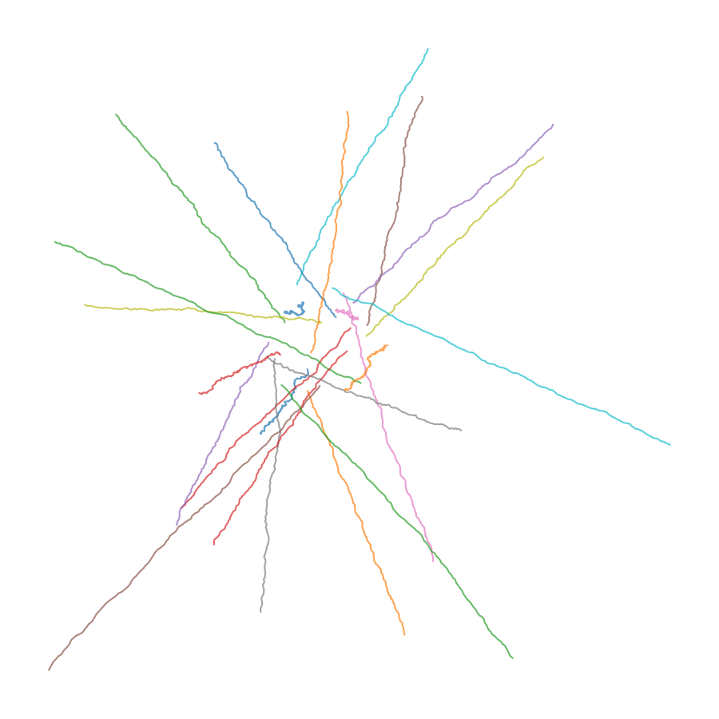

Projection — run_001
This is a single epistemic projection.
It does not evaluate outcomes.
It does not compare trajectories.
It does not recommend actions.

If the projection appears unclear, fragmented, or incomplete, that is acceptable.
Collapse, divergence, or silence are valid outcomes.